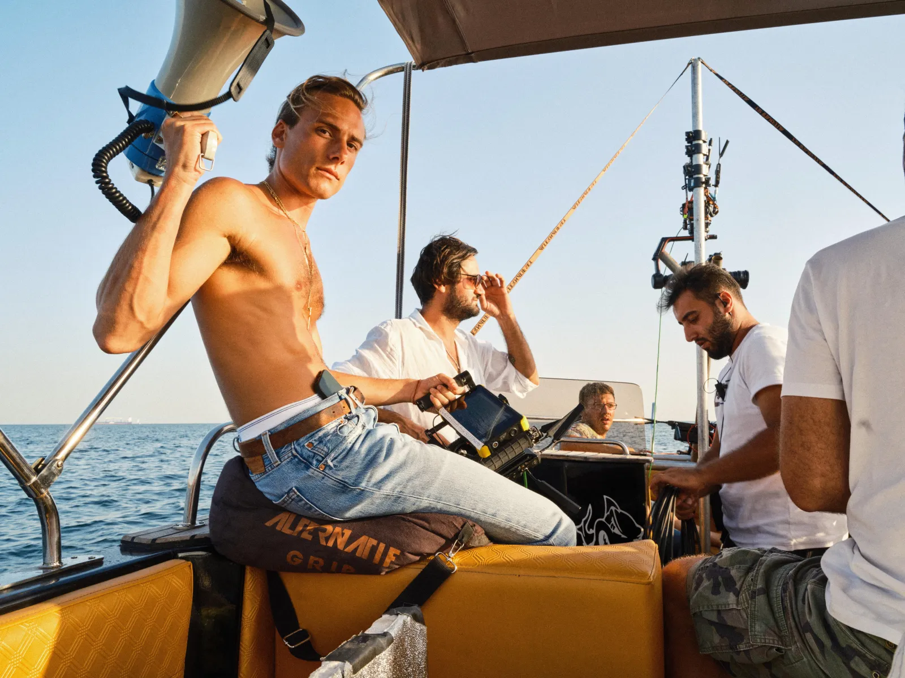
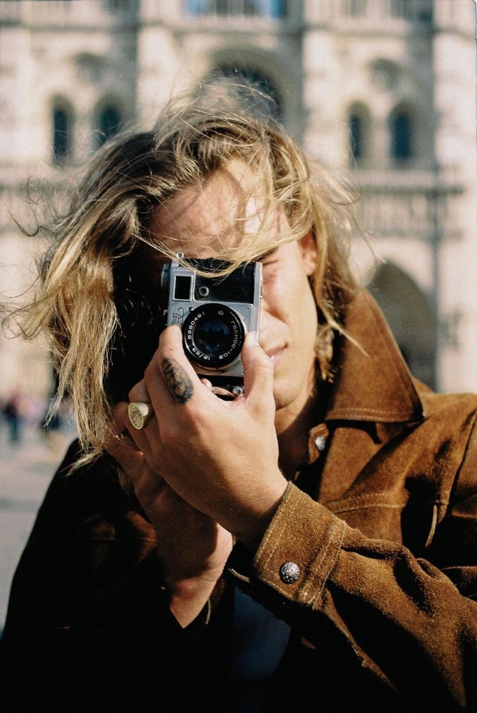

Modern day storytellers
Apollo Films is an independent film studio based in Istanbul. We plan and produce brand films, fashion work, campaigns, and short films.
See our work

Rafael Cemo Çetin
Director and jewellery designerThe studio
Apollo Films is an independent film studio founded in 2022 by Rafael Cemo Çetin, a director and jewellery designer working out of Istanbul.
We produce brand films, fashion work, campaigns, and short films. From initial concept to final cut.
Inspired by Apollo, the Greek god of light and order, the studio moves with intent. Our work is warm, but not sentimental. Emotional, but not performative. We value atmosphere, coherence and storytelling that travels across formats, cultures and time.
- Founded 2022
- Based Istanbul, Turkey
- Enquiries info@apollofilms.co
- Instagram @apollofilmsco